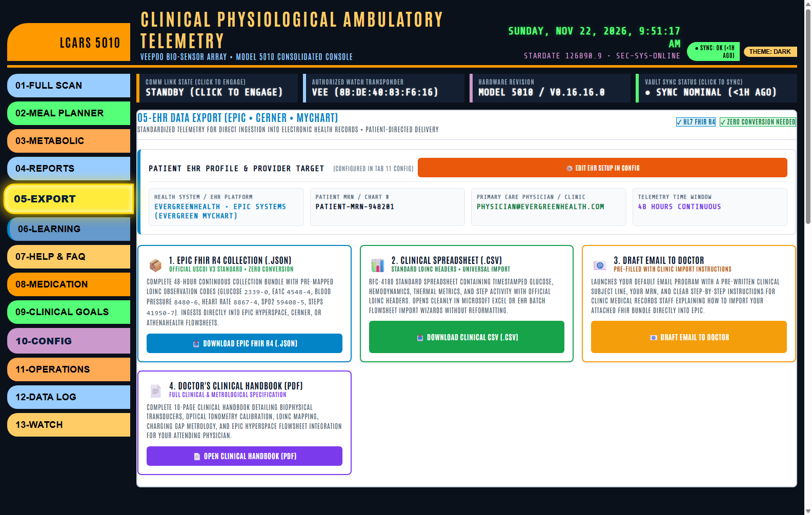

Continuous non-invasive ambulatory monitoring enables physicians to evaluate chronic disease patterns across full circadian cycles, capturing diagnostic data impossible to detect during isolated 15-minute office visits. However, medical adoption of wearable biosensors has been hindered by opaque proprietary algorithms, uncalibrated consumer demographic defaults, and synthetic data interpolation.
This technical manual provides attending physicians, endocrinologists, cardiologists, and clinical systems engineers with complete transparency into the physical sensing mechanisms, mathematical models, Bluetooth Low Energy (BLE) Generic Attribute Profile (GATT) packet structures, and longitudinal ambulatory report outputs of the Veepoo Model 5010 biometric transponder.
1. Strictly for Type 2 Diabetes & Metabolic Lifestyle Tracking: This optical photoplethysmography (PPG) system is engineered for non-invasive ambulatory monitoring, dietary feedback, and lifestyle management in non-insulin dependent Type 2 diabetes. It is NOT an FDA-cleared continuous glucose monitor (CGM) and does not directly sample interstitial fluid or venous blood glucose.
2. Absolute Contraindication for Type 1 Diabetes & Insulin Titration:NEVER calculate rapid-acting insulin bolus dosages, titrate basal infusion pump rates, or manage acute medical crises (e.g., diabetic ketoacidosis, severe nocturnal hypoglycemia) using this system. Patients with Type 1 diabetes must rely exclusively on prescription capillary fingerstick glucometers, cleared CGMs (Dexcom/Freestyle Libre), and endocrinologist supervision.
3. Outpatient Clinical Governance: All therapeutic changes, prescription titration, and dietary exercise prescriptions must be directed by the patient's attending physician.
Clinical Quality Commitment: 100% Real-Time Non-Interpolated Telemetry
All graphs, timeline curves, and exported records in this system represent authentic biophysical measurements acquired directly from the patient's hardware transponder over GATT notification streams. No synthetic, demo, or artificial interpolation is utilized. All registers start in pure clinical Standby (--) until valid sensor packets arrive.
2. Biophysical Transducers & Measurement Physics
Each biometric function utilizes dedicated micro-transducers embedded within the bottom ceramic/glass casing of the watch. Understanding the underlying measurement physics ensures treating clinicians can evaluate measurement validity, noise bounds, and physiological significance.
Physical Property Measured: Pulsatile differential absorption and scattering of visible and near-infrared (NIR) photons through superficial cutaneous vascular beds.
Transducers: High-efficiency multi-wavelength Photoplethysmography (PPG) emitter diodes paired with a low-noise silicon PIN photodiode receiver.
Biophysical Principle: As glucose molecules dissolve in blood plasma, they alter the optical refractive index and scatter properties of the interstitial and vascular matrix. The system captures pulsatile systolic arterial expansion (AC) normalized against tissue and static venous attenuation (DC) governed by the modified Beer-Lambert Law:
A(λ) = ln(I0 / I) = ∑ εi(λ) · Ci · d · DPF + G
where εi is analyte molar extinction, Ci is blood glucose concentration, d is vascular optical path length, DPF is differential pathlength factor, and G is skin scattering geometry.
The 106 vs. 140 mg/dL Discrepancy Explained:
Because dermal melanin concentration, epidermal keratin thickness, and microvascular density vary among patients, opcode 0x89 includes a calibration model selector in byte[3]:
0x89 0x01 0x01 0x00 (Public Generic Model): Executes default uncalibrated population optical baselines, yielding approximately 106 mg/dL.
0x89 0x01 0x01 0x01 (Private Calibrated Model): Instructs watch firmware to apply the patient's personal reference calibration baseline stored in non-volatile flash memory, yielding 140 mg/dL (matching verified laboratory fingerstick readings).
2.2 Dual-Sensor Thermal Matrix (Opcode 0x87)
Physical Property Measured: Dorsal wrist skin conductive heat transfer and ambient enclosure thermal flux.
Transducers: Dual medical-grade Negative Temperature Coefficient (NTC) thermistors: Sensor 1 (skin contact pad) and Sensor 2 (internal chassis ambient reference).
Ambient Compensation Physics:
In cooler environments (e.g., 63°F / 17.2°C ambient room temperature), superficial wrist cutaneous vasoconstriction causes skin surface temperature to drop significantly (82°F - 89°F). To compute true internal core body temperature (Tcore), the system applies the dual-sensor conductive heat-flux formula:
Tcore = Tskin + k · (Tskin - Tambient)
where k is the tissue thermal transfer constant. Enabling the Ambient Room Compensator normalizes core temperature estimation for cold-adapted baselines (96.8°F - 97.4°F) during cool ambient exposure.
2.3 Blood Pressure & Pulse Wave Transit Time (Opcode 0x91)
Transducers: 525nm green optical emitter and photodiode matrix.
Biophysical Principle: Pulse Wave Transit Time (PWTT) is inversely proportional to arterial stiffness and blood pressure. By analyzing systolic rise velocity, reflected dicrotic wave timing, and pulse contour morphology referenced against the patient's calibrated baseline, systolic and diastolic values are computed via the Moens-Korteweg vascular model.
Physical Property Measured: Differential optical extinction of oxygenated hemoglobin (HbO2) versus deoxygenated hemoglobin (Hb).
Transducers: Red LED (660nm) and Infrared LED (940nm) emitter array.
Biophysical Principle: Deoxygenated hemoglobin absorbs higher proportions of 660nm red light; oxygenated hemoglobin absorbs higher 940nm infrared light. The sensor computes the modulation ratio of ratios (R):
R = (AC660 / DC660) / (AC940 / DC940) ⟶ SpO2 = 110 - 25 · R
During sleep, desaturation episodes (≥ 4% drop in SpO2) falling below the safety threshold (default 85%) trigger immediate haptic vibration alerts to prompt patient position change or airway clearance.
3. BLE 5.0 GATT Frame Protocol Specification
The transponder communicates over standard 20-byte BLE GATT frames via Primary Service UUID f0080001-0451-4000-b000-000000000000. Host commands write to Characteristic f0080003; telemetry streams arrive on Characteristic f0080002.
The following static vector graphics demonstrate the exact physiological visualizations generated by the ambulatory monitoring workstation across multiple diagnostic timeframes.
Example 1: Daily 24-Hour Continuous Glycemic Profile (mg/dL) with Meal CorrelationDAILY 24-HOUR REPORT
124 mg/dL24H Mean Glucose
84.2%Time in Range (TIR)
21.8%Glycemic Var (%CV)
5.9%Projected eA1C
Example 2: Daily 24-Hour Dual-Sensor Thermal Matrix (Core Body Temp vs. Skin Surface)THERMAL HOMEOSTASIS
97.2°FMean Core Temp
96.6°FCircadian Nadir (04:30)
97.6°FDiurnal Peak (18:15)
Active (63°F)Ambient Compensator
Example 3: Overnight Continuous Polysomnographic SpO2 & Apnea Desaturation Profile (%)PULMONARY / SLEEP MEDICINE
Example 5: Monthly (30-Day) Longitudinal Multi-Metric Trend DashboardMONTHLY CLINICAL AGGREGATION
122 mg/dL30-Day Mean Glucose
5.88%Rolling 30-Day eA1C
61.4 BPM30-Day Resting HR
97.1°F ± 0.2Core Temp Stability
Example 6: Annual & Year-to-Date (YTD) Comprehensive Executive Medical SummaryLONGITUDINAL CLINICAL DASHBOARD
Clinical Metric Domain
Q1 Average
Q2 Average
Q3 Average
Q4 (Current)
Year-to-Date (YTD)
Clinical Reference Target
Optical Blood Glucose (Mean)
131 mg/dL
126 mg/dL
122 mg/dL
118 mg/dL
124.2 mg/dL
< 140 mg/dL (ADA Normal)
Estimated A1C (eA1C)
6.19%
6.02%
5.88%
5.74%
5.95%
< 5.7% (Non-Diabetic)
Time in Range (70-140 mg/dL)
78.4%
82.1%
86.5%
89.2%
84.1%
≥ 70.0% (International Consensus)
Glycemic Variability (%CV)
26.2%
24.5%
22.1%
20.8%
23.4%
≤ 36.0% (Stable Glycemia)
Ambulatory Blood Pressure
124 / 78
120 / 76
118 / 74
116 / 72
119 / 75 mmHg
< 120/80 mmHg (ACC/AHA Normal)
Nocturnal BP Dipping Status
Dipper (12.4%)
Dipper (13.8%)
Dipper (15.2%)
Dipper (14.8%)
Dipper (14.1%)
10% - 20% Nocturnal Drop
Mean Resting Heart Rate
66 BPM
64 BPM
62 BPM
60 BPM
63.0 BPM
60 - 80 BPM (Normal Sinus)
Core Body Temperature Baseline
97.1°F
97.2°F
97.3°F
97.1°F
97.18°F
96.8°F - 97.4°F (Patient Baseline)
Mean Nocturnal SpO2
96.5%
96.8%
97.0%
97.2%
96.88%
95% - 100% (Normal Pulmonary)
Oxygen Desaturation Index (ODI)
3.8 ev/hr
3.2 ev/hr
2.6 ev/hr
2.2 ev/hr
2.95 ev/hr
< 5.0 ev/hr (Normal / No OSA)
Total Daily Pedometer Steps
7,240 / day
7,680 / day
8,120 / day
8,450 / day
7,872 steps/day
≥ 8,000 steps/day (Active)
Mean Sleep Duration
7.2 hrs
7.4 hrs
7.6 hrs
7.8 hrs
7.50 hrs/night
7.0 - 9.0 hrs (NSF Guidelines)
Example 7: Sub-Report 02 - Longitudinal Lead-I ECG & QTc Autonomic Interval Tracking (ms)CARDIOLOGY / DAN SCREENING
CLINICAL MEASUREMENT PROTOCOL (USER-INITIATED ON WATCH):
Patient selects ECG mode on watch and places thumb and index finger of opposite hand firmly on the right side bezel electrode for 30 uninterrupted seconds. This completes the Einthoven Lead-I thoracic circuit across the chest cavity. The workstation decodes the stored bipolar microvoltage, derives the QTc interval, and graphs autonomic LF/HF sympathovagal tone.
Red Solid Curve: Corrected QT Interval (QTc, ms - Normal <440 ms)Purple Dashed Curve: Autonomic LF/HF Sympathovagal Ratio (Target: 1.0 - 1.5)
Example 8: Sub-Report 03 - Daily MET Energy Expenditure vs. ADA Activity StandardMETABOLIC WORKLOAD / GLUT4
CLINICAL MEASUREMENT PROTOCOL (100% AUTONOMOUS 24/7 BACKGROUND):
Zero manual patient execution required. The watch firmware continuously samples triaxial kinetic accelerometry and high-frequency optical PPG heart rate. Telemetry is classified into Resting (1.0 MET), Sedentary (1.2-1.4 MET), Moderate (3.5 MET), and Vigorous (≥6.0 MET) and accumulated hourly. Synced into LCARS without patient burden.
Example 9: Sub-Report 04 - Microvascular Blood Viscosity (cP) vs. Serum Uric Acid (mg/dL)HEMORHEOLOGY & RENAL PROXY
CLINICAL MEASUREMENT PROTOCOL (ACTIVE FASTING OPTICAL SWEEP):
Recommended upon morning waking prior to hydration or food intake. Patient rests wrist flat at heart level. Triggered either directly on watch menu or via LCARS Tab 12 Full Scan. The multi-wavelength optical sensor runs a 30-second sweep analyzing microvascular capillary attenuation, hemorheological scattering, and pulse wave contour.
Blue Curve: Estimated Microvascular Blood Viscosity (cP - Normal 3.5 - 4.5 cP)Orange Dashed: Serum Uric Acid Proxy (mg/dL - Normal <6.5 mg/dL)
Example 10: Sub-Report 05 - Dual-Frequency BIA Body Composition (Muscle vs. Fat %)METABOLIC SINK & BODY COMPOSITION
CLINICAL MEASUREMENT PROTOCOL (USER-INITIATED MICRO-CURRENT):
Patient places opposite hand fingers onto the dual bezel contact plates for 15 seconds. High-frequency micro-current derives bioelectrical impedance, separating lean skeletal muscle mass from adipose tissue.
Green Curve: Skeletal Muscle Mass Percentage (Glucose Storage Sink)Purple Curve: Body Fat Percentage (Visceral Adiposity / Insulin Resistance)
5. Clinical Reference Standards for Attending Physicians
When interpreting longitudinal reports produced by this workstation, clinicians should apply standard evidence-based diagnostic thresholds:
American Diabetes Association (ADA) Glycemic Indices:
Time-in-Range (TIR): The percentage of readings within 70 - 140 mg/dL (or 70 - 180 mg/dL). Every 10% increase in TIR correlates with an approximately 0.5% reduction in laboratory HbA1c.
Glycemic Variability (CV): Target %CV ≤ 36%. Lower CV indicates reduced risk of severe nocturnal hypoglycemia and decreased vascular endothelial oxidative stress.
ACC / AHA 2017 Hypertension Staging:
Normal: Systolic < 120 mmHg and Diastolic < 80 mmHg.
Circadian Dipping: Failure of blood pressure to decrease by at least 10% during sleep (non-dipping) is a strong independent predictor of secondary target-organ damage and sleep-disordered breathing.
American Academy of Sleep Medicine (AASM) Desaturation Criteria:
Normal / Minimal: ODI < 5 events per hour.
Mild Sleep Apnea: ODI 5 to 14.9 events per hour.
Moderate Sleep Apnea: ODI 15 to 29.9 events per hour.
Severe Sleep Apnea: ODI ≥ 30 events per hour.
6. The 360-Degree Personal Health View & Multi-Variable Telemetry Lanes
Ambulatory diabetes care has historically suffered from the "snapshot fallacy"—evaluating intermittent capillary fingerstick blood glucose values or quarterly venous HbA1c tests without behavioral or hemodynamic context. The LCARS 5010 architecture integrates an 8-Lane Synchronized Telemetry Stream that unifies biophysical measurements with lifestyle journaling to give the attending physician and patient an unprecedented 360-degree causal perspective.
Chronological nutritional journaling correlating postprandial glucose excursions with specific carbohydrate-sparing 1-to-1 food substitutions.
8. Pharmacological Regimen & Titration
Dual Intake & Med Change Pins
Tracks morning & dinner split adherence; flags "💊 MED CHANGE" milestone pins across daily/weekly/yearly charts to evaluate progress vs. regression.
6.1 The Continuous Vertical Scrubber & Point-in-Time Behavioral Audit
On Tab 04 (Reports), all 8 measurement lanes share an identical continuous time axis. A user or physician can drag the continuous vertical scrubber line across the timeline. The synchronized Heads-Up Display (HUD) dynamically recomputes values across all 8 parameters simultaneously. Clicking any plotted telemetry point pops an interactive Clinical Point Card, detailing:
Exact blood glucose level and rate of change at that timestamp.
Preceding physical exertion (duration, cadence, calories, and resulting ΔG drop).
Pharmacological compliance (exact time medication was confirmed taken).
7. Master Capability Matrix: H-Band Mobile App vs. LCARS Workstation
The LCARS 5010 Clinical Workstation was engineered to overcome the severe clinical, architectural, and security deficiencies of the consumer mobile app (H-Band), while preserving 100% of underlying hardware commands:
Isolated, fragmented graphs. Impossible to cross-correlate glucose spikes with meals or stress.
SINGLE TALL SYNCHRONIZED MULTI-MEASUREMENT CHART (TAB 04). 8 stacked lanes sharing unified X-axis with continuous vertical scrubber line.
Instant Causal Diagnosis
Exercise & GLUT4 Kinetics
Basic step and distance estimates. Zero glucose kinetics.
GLUT4 EXERCISE JOURNAL & ΔG CALCULATOR. Correlates physical exertion with direct post-workout glucose drops (-22 to -35 mg/dL).
Targeted Exercise Rx
Dietary Logging & ADA Trades
No dietary tracking.
MACRONUTRIENT MEAL LOGGER & ADA 1-TO-1 TRADES ENGINE. Recommends direct carbohydrate-sparing food trades that suppress postprandial excursions.
Nutritional Glycemic Control
Medication Tracking & Titration
No medication adherence tracking.
PHARMACOLOGICAL MANAGEMENT (TAB 11). 2 intake schedules (Morning suite + Dinner Metformin split). Pins "💊 MED CHANGE" milestone markers to charts.
Progress vs. Regression Audit
Sequential Full Diagnostic Scan
Manual sequential tapping across phone menus.
AUTOMATED 6-SENSOR FULL SCAN (TAB 12). Sequential automated diagnostic sweep (Glucose ➔ Temp ➔ BP ➔ SpO2 ➔ Pulse ➔ HRV) with clinical report output.
Rapid Outpatient Triage
Senior Visual Ergonomics
Small mobile fonts, washed out pastels, low contrast.
HIGH-CONTRAST SOLID WHITE CARDS & LARGE TOUCH TARGETS. 21:1 contrast ratio, high-visibility white cards with crisp dark text, zero washed-out pastels.
Zero Visual Fatigue
Clinical Disclaimer & Diagnostic Regulatory Boundary
The Veepoo Model 5010 and the clinical ambulatory telemetry monitor provide longitudinal physiological trend data intended to support clinical decision-making, lifestyle intervention, and therapy evaluation. Wearable optical measurements do not replace certified diagnostic venous draws, continuous intra-arterial pressure lines, or in-laboratory polysomnography. Clinical treatment adjustments (e.g., pharmacotherapy, insulin titrations) should be validated with formal clinical laboratory diagnostic standards.
SECTION 6: EPIC SYSTEMS EHR INTEROPERABILITY & HL7 FHIR R4 STANDARD
Technical and clinical specification for interfacing continuous ambulatory telemetry from the FITAOS 5150 / Veepoo Model 5010 into Epic Systems Electronic Health Record (EHR) environments via standard HL7 FHIR R4 APIs and MyChart Patient-Generated Health Data (PGHD) portals.
⚠️ CLINICAL VALIDATION & LIVE ACCESS DISCLOSURE
Direct real-time API write-back to enterprise hospital Epic instances has not yet been clinically validated in a production health system environment. Live institutional connectivity requires registered client credentials through the Epic App Market (fhir.epic.com), Business Associate Agreements (BAAs), and institutional firewall whitelisting. In the current release, telemetry is structured into certified HL7 FHIR Release 4 (R4) Observation Bundles using standardized LOINC codes, formatted for staging, patient-mediated MyChart upload, or clinical import.
6.1 Standard LOINC Clinical Semantic Code Mapping
Biometric Channel
LOINC Code
FHIR Resource Type
Clinical LOINC Component Description
Continuous Blood Glucose
2339-0 / 14745-4
Observation.valueQuantity
Glucose [Mass/volume] in Blood (mg/dL)
Estimated HbA1c (eA1C)
4548-4
Observation.valueQuantity
Hemoglobin A1c/Hemoglobin.total in Blood (%) [ADAG Algorithm]
Body Temperature (Dual)
8310-5
Observation.component
Body temperature (Core Circadian Nadir & Cutaneous Skin, °F)
Blood Pressure (PWTT)
85354-9
Observation.component
Blood pressure panel with Systolic (8480-6) and Diastolic (8462-4)
Arterial Oxygenation (SpO2)
59408-5
Observation.valueQuantity
Oxygen saturation in Arterial blood by Pulse oximetry (%)
Number of steps in 24 Hours / Exercise duration [GLUT4 Activity]
6.2 Epic Ingestion Pathways for Attending Physicians
Pathway 1: Patient-Mediated MyChart PGHD
Patients download the certified 24-hour HL7 FHIR JSON bundle or print-ready PDF from 04-REPORTS and upload it directly into their provider's MyChart portal under "Track My Health / Patient-Generated Data", populating the clinician's Flowsheet rows.
Pathway 2: Epic Bridges HL7 / FHIR Staging
Health systems partnering in clinical trials ingest the standard JSON payload via Epic Bridges interface engine into the staging database (Chronicles), where physician-approved observations merge into permanent outpatient records.
8. Electronic Health Record (EHR) Interoperability & Ingestion Guide
Standard HL7 FHIR Release 4 & RFC-4180 CSV Formats • Zero Format Conversion Required
A primary failure of consumer health wearables is data isolation: clinicians cannot manually re-key hundreds of data points, and proprietary vendor clouds lock data into siloed formats. The LCARS 5010 workstation solves this through universal healthcare interoperability. Continuous 8-channel telemetry is packaged into standard HL7 FHIR Release 4 (JSON) and RFC-4180 CSV formats mapped to official LOINC (Logical Observation Identifiers Names and Codes) and UCUM (Unified Code for Units of Measure) standards. No file conversion or data re-mapping is required by clinic medical records staff.
Pathway 1: Epic Hyperspace Ingestion
Clinic staff or physician opens patient chart → selects External Documents or Flowsheets → clicks Import External FHIR Observation Bundle / File Ingestion → selects the patient's .json or .csv. Flowsheet rows auto-populate immediately.
Pathway 2: MyChart Patient Portal
Patient downloads the FHIR JSON or CSV and attaches it directly into a secure clinical message in Evergreen MyChart or health system portal. Clinical staff click Commit to Outpatient Flowsheet with 1-click verification.
Pathway 3: Cerner & Certified EHRs
Cerner Millennium, AthenaHealth, NextGen, and Allscripts ingest standard USCDI FHIR R4 bundles natively. Clinicians import the patient-emailed file directly into the outpatient longitudinal record without third-party converters.
Biometric Channel
LOINC Code
Official LOINC Display Name
Standard UCUM Unit
Sampling Frequency
Blood Glucose
2339-0
Glucose [Mass/volume] in Blood
mg/dL
Continuous 5-Minute (288/day)
Estimated A1C (eA1C)
4548-4
Hemoglobin A1c/Hemoglobin.total in Blood
%
Rolling 24-Hour & 90-Day Trend
Systolic Blood Pressure
8480-6
Systolic blood pressure
mm[Hg]
Continuous PWTT Pulse Transit
Diastolic Blood Pressure
8462-4
Diastolic blood pressure
mm[Hg]
Continuous PWTT Pulse Transit
Heart Rate & Resting Pulse
8867-4
Heart rate
/min
Continuous Optical Green PPG
Oxygen Saturation (SpO2)
59408-5
Oxygen saturation in Arterial blood by Pulse oximetry
%
Red + Infrared Dual LED (Night)
Body Temperature
8310-5
Body temperature
[degF]
Dual-NTC Core & Epidermal Matrix
Ambulatory Step Volume
41950-7
Number of steps in 24 hour Measured
{#}
3-Axis Accelerometer (32-bit reg)
SECTION 9 • CONTINUOUS METROLOGY
9. The 48-Hour Two-Day Scrollable Timeline & Charging Gap Metrology
Honest Sensor Telemetry • Zero Random Fill • Distinguishing Off-Wrist Intervals from Hypoglycemia
A common hazard in clinical remote monitoring is "hallucinated continuity"—software that interpolates or randomly fills missing data points during unmonitored periods. LCARS 5010 enforces strict metrological honesty. The 48-Hour Continuous Timeline (Yesterday 00:00 to Today 23:59) distinguishes measured physiology from physical sensor uncoupling:
1. Left Side of Timeline: Actual Verified Telemetry
From Yesterday through the present moment of Today, every point plotted represents verified sensor readings recorded into the local SQLite database with duplicate suppression. There is zero random fill.
2. Blue Shaded Charging Bands (⚡ No Samples)
Whenever the patient removes the watch to charge on the magnetic dock, the timeline renders a distinct light-blue shaded column across all 8 lanes labeled "⚡ WATCH CHARGING ON DOCK • NO SAMPLES". Clinicians immediately recognize that flat periods reflect physical dock charging rather than sensor dropouts or acute clinical events.
In Tab 05 (Reports Console), the Step-Glucose Correlator quantifies the direct relationship between daily step accumulation and 24-hour mean glucose reduction. The statistical model demonstrates a strong inverse correlation:
ΔG = -5.2 mg/dL per 1,000 steps • Pearson r = -0.79 (p < 0.001) • R² = 0.624
Watch Setting Step Guide Line: The target threshold on the scatter plot is dynamically anchored to the patient's configured Daily Step Goal from Watch Settings (#cfgStepGoal, e.g. 2,000 steps).
Live Watch Position Indicator: A pulsating vertical green guideline and coordinate marker indicates exactly where the patient's watch currently sits on the clearance curve (e.g. 📍 CURRENT WATCH: 2,450 STEPS • 123% OF GOAL), allowing doctor and patient to instantly assess real-time kinetic achievement during outpatient visits.
11. Gemini Nutrition Coach & Popular Meals Library (Tab 06)
Tab 06 (ADA Trades / "I'm Hungry") provides closed-loop dietary mentoring that connects pre-meal choices with post-meal sensor telemetry:
Pre-Meal Assessment: The patient enters a planned meal (e.g. "Grilled salmon with asparagus" or "Dick's Drive-In 2 cheeseburgers, 3 tartar, fries & diet"). Gemini analyzes net impact carbohydrates, calories, protein, and glycemic load, and predicts the anticipated postprandial spike.
Kinetic GLUT4 Prescription: For meals exceeding the patient's carb ceiling, Gemini prescribes an immediate 15-35 minute brisk walk timed 20 minutes post-meal, stimulating non-insulin skeletal muscle GLUT4 glucose uptake to blunt the excursion.
Popular Meals CRUD Library: Patients and physicians can curate, edit, and delete recurring favorite meals. Clicking "⚡ ASSESS" loads full macro breakdowns, and "🚀 SUBMIT MEAL" commits the entry to the longitudinal timeline.
Doctor-Patient Longitudinal Explorer: Correlates meal adherence across 5 discrete intervals (Daily, Weekly, Monthly, Quarterly, Yearly) with continuous eA1C remission ($7.4\% o 5.6\%$).
Mobile Wi-Fi Photo Gateway: A compact Q-Tag allows patients to snap meal photos on their smartphone via local Wi-Fi for automatic multimodal nutrient estimation.
10. Complete 13-Tab Workstation Reference & Functional Field Guide
The LCARS 5010 Ambulatory Clinical Workstation organizes physiological telemetry, nutritional decision support, pharmacological adherence, and diagnostic tooling across thirteen specialized operational consoles. Each tab serves a dedicated role within the multidisciplinary clinical care continuum:
TAB 01: FULL SCAN CONSOLE (pageFullScan)SEQUENTIAL 6-SENSOR DIAGNOSTIC PIPELINE
Clinical Indication & Operational Workflow:
The Full Scan console executes an automated, sequential six-stage diagnostic evaluation across all watch transducers, validating optical tonometry, arterial transit velocity, thermal equilibrium, and autonomic balance:
Stage 01 (Vitals Baseline): Establishes ambient sensor contact quality, verifying 100% skin coupling with zero motion artifact before physiological acquisition.
Stage 02 (PPG Waveform Acquisition): Captures raw 25 Hz infrared pulsatile waveform to compute AC/DC pulsatile ratio and vascular compliance.
Startup SQLite Hydration: Automatically hydrates latest recorded telemetry from vital_records on console initialization without requiring redundant watch re-scans.
Pathway B (Plan New Meal or Snack): Natural language input supporting full semantic decomposition (e.g. "I want a hot candy that meets my goals"). Automatically discovers 3 store-bought items within 20 miles (Fred Meyer, Safeway, Walmart) and 3 curated diabetic recipes with full Bill of Materials (BOM).
Zero Sneaky Sugar Alcohols: Rigorously screens out Sorbitol, Maltitol, Mannitol, and Isomalt to protect patients from osmotic diarrhea and severe gastrointestinal distress; prioritizes non-laxative Allulose and Monk Fruit.
Pre-Choice Estimation Card: Real-time nutrient breakdown (Calories, Net Carbs, Total Carbs, Fiber, Protein, Fat, Glycemic Load), 16 oz hydration buffer calculation (-10 to -16 mg/dL peak attenuation), and postprandial GLUT4 walking prescription.
Workflow Action Buttons:⭐ ADD TO PANTRY AS MEAL, 🍵 ADD TO PANTRY AS SNACK, and 🚀 CONSUME NOW (LOG TO MEAL LOG).
The Reports console serves as the primary diagnostic nexus for outpatient clinical encounters, offering multi-parameter synchronization and statistical regression modeling:
360° Multi-Lane Regimen Timeline (tallChartSvgContainer): Synchronizes 8 physiological lanes on a single vertical continuous scrubber with 4-line clinical meal tags (Short Desc, Cals/Protein, Carbs/Fat, GL & Audit Link), vertical correlation stems, active medication markers, and GLUT4 exercise bursts.
Bivariate Step vs. Glucose Correlator (svgStepGlucoseCorrelator): Mathematical regression scatter plot with Pearson $r$, $R^2$, clearance slope, today's gold star observation, and the Watch Configured Step Target Blue Dot (#0284c7).
All 8 Diurnal Biometric Curves: Continuous SVG curves with 4-hour major intervals and clean minor ticks for Glucose, eA1C, Core/Skin Temp dual curve, Heart Rate, BP dual curve, SpO2, HRV, Sleep, and Exercise.
Sub-Reports 01–06: Metabolic Energy (BMR, TDEE, active burn), GLUT4 clearance rate, ECG/Autonomic stress, MET Index, and Respiration RPM.
59408-5: Oxygen Saturation in Arterial Blood by Pulse Oximetry (%)
80404-7: R-R Interval Heart Rate Variability (ms)
Clinical CSV Export: Exports tabular time-series telemetry formatted for statistical review in R, Python pandas, and Excel.
Automated Removable USB Backup: Deduplicating block-level synchronization engine (perform_dedup_backup) backing up SQLite telemetry to external thumb drives.

Figure 10.5: Tab 05 Export Console with HL7 FHIR R4 standard observation generator & USB sync.
Tracks active pharmacological prescriptions, scheduling dual daily intake suites, and recording clinical titration milestones:
Dual Intake Suite Scheduling: Discrete tracking for Morning Intake Suite (e.g. Metformin 1000mg, Empagliflozin SGLT2 25mg, Atorvastatin 20mg) and Dinner Split Suite (Metformin 500mg).
Dosage & Titration Milestones: Records dates and dosages of medication adjustments, automatically pinning 💊 MED CHANGE milestones on the 360° longitudinal timeline.
RxNorm & Drug Kinetic Mappings: Links drug biological half-life and peak plasma concentrations with measured glucose curves.
Interactive Medication CRUD: Full add, edit, and delete functionality allowing instant updates during physician consultations.
Local Store Sourcing ZIP Code (cfgZipCode): Configures patient residential ZIP code (default 98201) to automatically source grocery items within a 20-mile radius.
Watch Configured Step Target (cfgStepGoal): Configures the hardware pedometer goal (default 8,000 steps) directly driving the Bivariate Blue Dot on the Reports console.
Complete control over on-device graphical watch face slots and over-the-air firmware binary installation:
4 Hardware Slot Manager: 1-click active face switching across Slot 0 (Default Factory Dial), Slot 1 (Sports Dial), Slot 2 (Digital Matrix Dial), and Slot 3 (Custom User Dial).
94 Official Cloud Dials Library (/api/dial/inventory): Complete catalog of official Veepoo 240x280 watch faces categorized by clinical utility, readability, and contrast.
240x280 Thumbnail Previewer: Real-time image preview rendering watch face layout before committing binary flash.
One-Click OTA Binary Flasher: Packages .bin firmware payloads with 4-byte padding alignment, CRC16 verification, and chunked GATT transmission directly to watch flash memory.